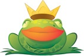

- English
- français
Actualités EPFL
Web2010, le web nouveau pour l'EPFL
Le grand chantier EPFL de cet été sera virtuel. Il ne s’agit pas moins que de transformer le domaine web .epfl.ch (environ 1'500 sites et 2 mio de pages) en un outil de communication à la hauteur des besoins et de l’image de l’institution.
Les maquettes graphiques et les principes ergonomiques achèvent leur tour de consultation auprès des différents dicastères de l’Ecole. Vous avez peut-être assisté à leur présentation lors de la Conférence des Webmasters. Suite aux observations recueillies, nous les avons modifiés pour mieux coller à vos besoins. Actuellement, le KIS est en train de développer ces modèles pour en faire de véritables pages web.
Les grands changements de mise en page sont, entre autre,
- Une page structurée sous forme de grille, sur laquelle se placent les divers éléments,
- Des pages de largeur fixe avec des caractères plus lisibles,
- Le bandeau commun dans lequel se trouvent le moteur de recherche et des liens généraux pour l’ensemble de l’institution,
- Une navigation unifiée dans les sites, sous forme de barre horizontale avec des menus déroulants.
Côté technique, le KIS installe une nouvelle version du CMS Jahia (outil de gestion simplifiée de contenu web). Une des ambitions du projet est de profiter de la nouvelle charte et de la version améliorée de Jahia pour basculer les sites utilisant d’autres technologies sur ce système. Cette solution présente d’indéniables avantages, tant pour la cohérence de l’image de l’Ecole sur le web qu’au niveau économique (support, développement, formation, mises à jour techniques, tout ceci réalisé de manière centralisée). L’occasion est également parfaite pour mettre à jour les contenus, et pour se débarrasser de l’information obsolète, redondante ou inutilement dupliquée.
L’outil ‘actualité’ sera lui aussi adapté pour permettre une meilleure circulation des news. Dorénavant, il sera possible pour chaque unité d’écrire un article, qui sera ensuite placé dans un panier commun dans lequel viendront puiser les webmasters des sites principaux et de la homepage. Chacun pourra ainsi récupérer les flux d’actualité qui l’intéressent. Pour les gens qui utilisent Jahia, le KIS a ouvert un serveur de test, où ils peuvent voir l’aspect de leurs pages sur la nouvelle maquette. Ainsi, les webmasters pourront constater le travail à faire sur le contenu, l’aspect mais surtout la structure de leur site. Une équipe d’étudiants compétents seront en outre à leur disposition pendant l’été pour les aider à la migration. La date de mise en ligne pour la page d’accueil, les portails et les principaux sites est fixée au 6 septembre 2010. Les personnes concernées seront contactées pour planifier au mieux les plages de travail en fonction de leurs disponibilités et de la charge propre à chaque site.
- Auteur:
- Natalie Meystre
- Sources:
- STI